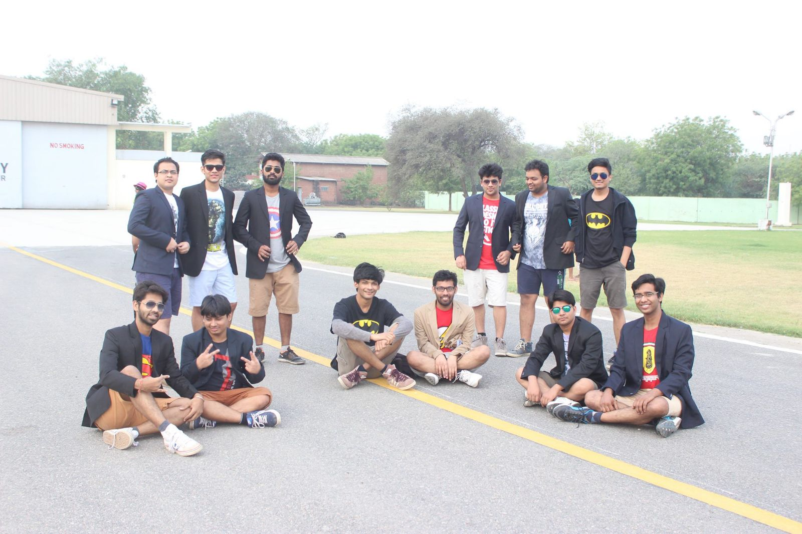
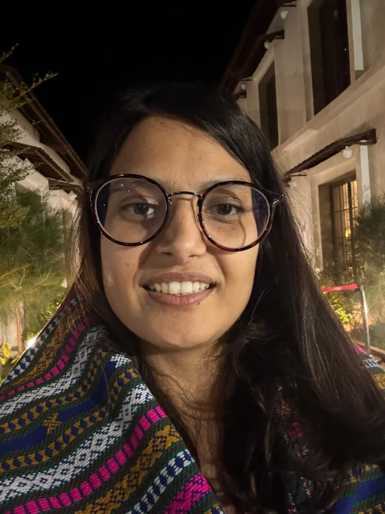

Celebrating 10 Years Together
A decade since IIT Kanpur became home.
0Days
00Hours
00Min
00Sec
.png) 10-Year ReunionClass of 2016
10-Year ReunionClass of 2016

A decade since IIT Kanpur became home.
Ten years ago, we were walking into lecture halls, hostels, labs, clubs and wings - not knowing that IITK would give us much more than a degree.
It gave us wingies, fundae, nightouts, GPLs, treats, campus walks, OAT evenings, New SAC rooftops, Hall canteen conversations, Galaxy enthu, Antaragni madness, Techkriti hustle, Udghosh energy — and friendships that somehow survived placements, cities, time zones and adult life.
From last-minute notes before exams to endless bakar after midnight, from "chaapna hai" to "chill maar", from CS office to Hall rooms, from department hangouts to the final campus walk — we have carried a piece of IITK everywhere we went.
This 10-year reunion is not just about coming back to campus. It is about coming back to the people who made those four years unforgettable.
Let's return to where many of our best stories began — our second home, IIT Kanpur.



Everything you need to get back to campus comfortably.
We're finalising the 3-day plan for 21–23 November 2026. Check back — we'll update it here.

.jpg)

.jpg)

📸 Have photos from 2012–2016? Send them to the coordinators to feature here.
Reach out anytime regarding registration, accommodation, or any aspect of the reunion.
Pick a category to see related questions.
The reunion is for the 2016 graduating batch — B.Tech, BT-MT (dual degree) and MSc (5-year) programmes.
The registration fee is based on the number of alumni attending — higher attendance means a lower per-person fee, and vice versa. The final fee is decided in consensus with the batch coordinator. If an alumnus cannot attend, the fee is non-refundable but transferable to another alumnus — please inform your batch coordinator or the IITK point of contact.
You can pay online via credit card, debit card, Google Pay (GPay) or PayPal.
No, the registration fee is not refundable. However, it can be transferred to another alumnus.
Please inform your batch coordinator or the designated contact from IIT Kanpur.
It will be winter in Kanpur, so pack accordingly — comfortable and warm clothing is recommended.
Yes, transport arrangements will be made as per your travel form response.
If you're arriving at Lucknow Airport or any other distant location, the reunion team can assist with taxi bookings. However, you'll need to pay the taxi vendor directly.
Yes, available on a first-come, first-served basis. Off-campus visits can be arranged on a paid basis.
Yes, you are free to do so. Cab numbers will be provided; payment is on a personal basis.
Contact your batch coordinator or: Piyush Saini +91 88408 98982, Kartik Upadhyay +91 81879 26962, Naitik Paswan +91 96165 83151.
Yes — all alumni will be accommodated at the Visitors' Hostel (VH). Families will be provided individual rooms on a charge basis. Room allocation will be handled in collaboration with batch coordinators.
Each room is double occupancy.
No. Rooms will be assigned upon arrival.
Rooms will be allotted in VH1 (Old Visitors' Hostel) and VH2 (International Hostel), based on availability.
Double-bed rooms with extra bedding (if required) will be provided. Prior notice is appreciated.
Yes, all rooms will be equipped with heat blowers.
Yes, lodging in the dormitory section of VH can be arranged on prior notice. Meals are available in the hostel mess.
No. It must be paid by the concerned alumnus.
Dial the internal extension number from your room phone for any issues related to lighting, AC, toiletries, tea/coffee supplies, etc. Housekeeping is only available in your presence, as VH does not keep spare room keys.
VH follows a 24-hour check-in/check-out policy. Kindly return your room key at the VH reception before departure.
Report directly to your assigned Visitors' Hostel. Contact your batch coordinator or: Sakshi Gulati +91 99363 57737, Amisha Asthana +91 87658 02521, Pallavi Awasthi +91 75184 27164.
Families can enjoy games and other engagement activities planned during the reunion. Glider rides are also available at the airstrip (weather permitting) for ₹1200 per ride. Pre-booking is required and payment must be made on-site.
Yes. Prior confirmation is required.
Please inform your batch coordinator and the IITK team in advance so we can assist with arrangements.
Yes, the Health Centre offers medical support. Doctors will be available, and ambulances can be arranged in case of emergencies.
Yes, with prior notice, meals can be arranged in the hostels.
Yes, the IITK Music Club can assist, but please inform us well in advance.
Yes, lodging can be arranged, but costs must be covered by the batch or sponsor, as decided with the batch coordinator.
ATMs for State Bank of India and Union Bank are available at the Shopping Centre and near Hall 3.
The campus Shopping Centre has general stores, a restaurant (formerly Red Rose), bakeries, medical stores, bookshops and photocopy services.
Use the campus directory at iitk.ac.in/tel, dial extension 7210 from an internal phone, or inform the reunion team.
Highlights include the Open Air Theatre (OAT), New SAC & indoor gym, New Halls of Residence, P. K. Kelkar Library, Faculty Building, Lecture Hall Complex, SIDBI Incubation Centre, Environmental Science Building, Park 1967, Waterfront 795, the Airstrip, and the Computer Science, Motwani & Helicopter buildings. A campus map is in your registration kit — view it online.
Yes, subject to availability and prior request.
Each VH room will have a list of important contact numbers for your convenience.